Candidate List 20261031Last night — ZTF: 0 passed basic cuts (0 young) · LSST: 1,726 passed basic cuts (801 young)Previous Day Next Day
Section 1: New Sources (age<1d) Section 2: Old (1-5d) sources observed last nightplaceholder
Section 1: New Afterglow/FBOT Cands Last Night (0)
Section 2: Older Sources Observed Last Night (18)
0. [LSST] 171141216246693947 (Afterglow?) [Back to Top] [Fritz Alert] [Fritz Source] [Lasair]RA, Dec: 35.85906, -3.37811 2h23m26.17s, -3d-22m-41.19sGalactic (l, b): 169.70948, -57.63833 ext(g-r) = 0.026Coincident trigger: Fermi/GBM GRB261029100 (r=9.4 deg, sep 14.7 deg = 1.57 r; 1.03 d before first detection)Trigger time(s) marked on the light curve; error circles in the localization panel.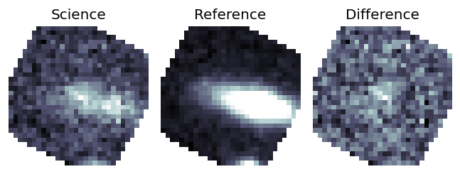
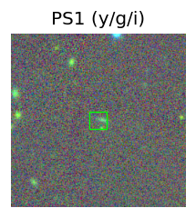
TESS: Sectors [ 4 31]
SDSS (<15 kpc):Found SDSS phot-z: z=0.38; peak abs mag = -19.03
PS1: 0 sources in 3 arcsec
LegacySurvey: 1 sources in 3 arcsec Closest: d = 0.55 arcsec, 85.2 deg (east of north) photoz=0.99 (68% bounds 0.4, 1.25), type=EXP peak abs mag (ext. corrected) = -21.5 (68% bounds -19.13, -22.13)
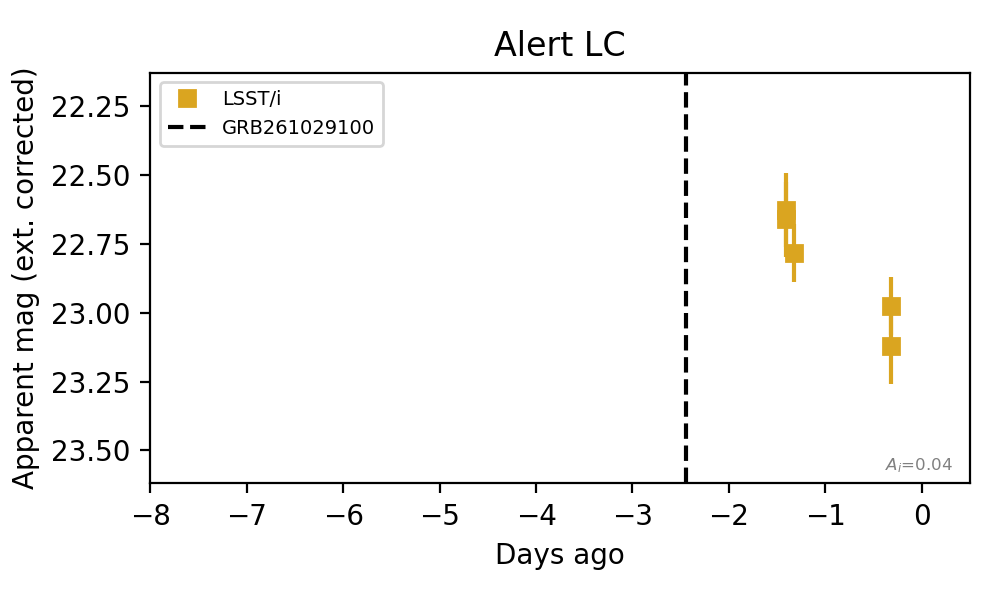
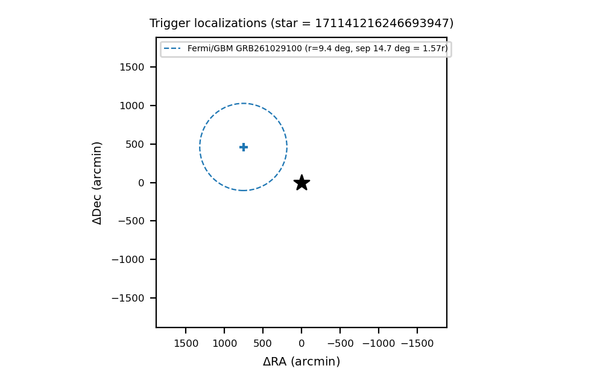
Rise Rate:
Fade Rate:
i: 0.31 mag/day
1. [LSST] 171141216249839623 (Afterglow?) [Back to Top] [Fritz Alert] [Fritz Source] [Lasair]RA, Dec: 34.1817, -4.67414 2h16m43.61s, -4d-40m-26.91sGalactic (l, b): 168.86112, -59.70833 ext(g-r) = 0.021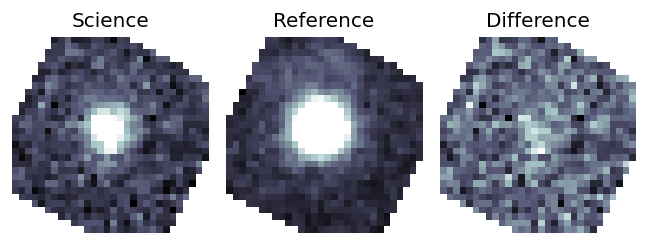
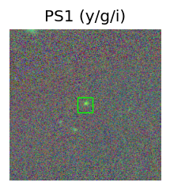
TESS: Sectors [ 4 31 97 108]
SDSS (<15 kpc):Found SDSS phot-z: z=0.58; peak abs mag = -20.03
PS1: 0 sources in 3 arcsec
LegacySurvey: 1 sources in 3 arcsec Closest: d = 0.14 arcsec, 11.4 deg (east of north) photoz=0.52 (68% bounds 0.49, 0.54), type=REX peak abs mag (ext. corrected) = -19.72 (68% bounds -19.58, -19.85)
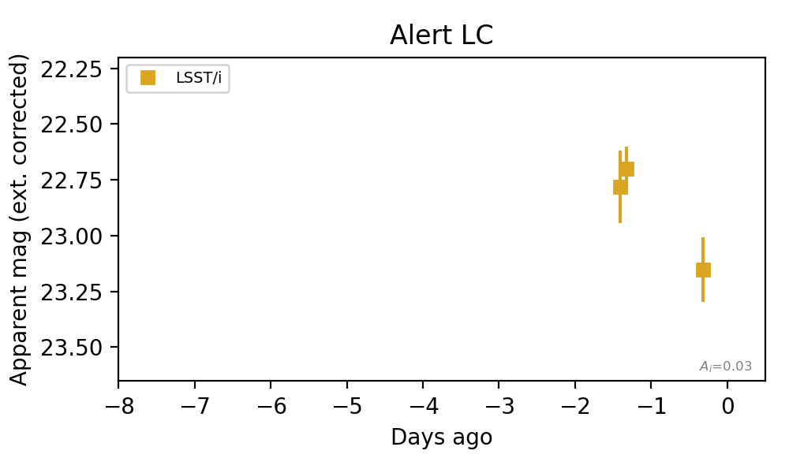
Rise Rate:
Fade Rate:
i: 0.41 mag/day
2. [LSST] 171141194636067002 (FBOT?) [Back to Top] [Fritz Alert] [Fritz Source] [Lasair]RA, Dec: 359.2031, -2.81377 23h56m48.74s, -2d-48m-49.59sGalactic (l, b): 92.3401, -62.39571 WARNING: -2.26 deg from ecliptic plane ext(g-r) = 0.05


TESS: Sectors [42 70]
SDSS (<15 kpc):Found SDSS phot-z: z=0.35; peak abs mag = -22.17
PS1: 0 sources in 3 arcsec
LegacySurvey: 1 sources in 3 arcsec Closest: d = 0.09 arcsec, 136.0 deg (east of north) photoz=0.33 (68% bounds 0.29, 0.36), type=SER peak abs mag (ext. corrected) = -22.01 (68% bounds -21.66, -22.23)

Extinction-corrected ri color:
From alerts: -0.11 +/- 0.1 mag
Rise Rate:
r: 0.54 mag/day
Fade Rate:
r: 0.09 mag/day
3. [LSST] 171141201636884645 (FBOT?) [Back to Top] [Fritz Alert] [Fritz Source] [Lasair]RA, Dec: 359.86594, -3.12565 23h59m27.83s, -3d-7m-32.35sGalactic (l, b): 93.32676, -62.97056 WARNING: -2.81 deg from ecliptic plane ext(g-r) = 0.042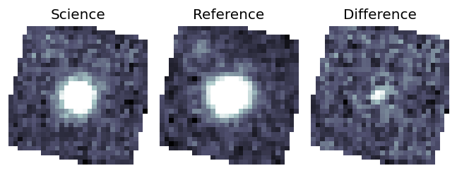
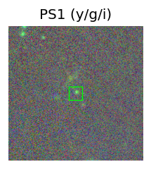
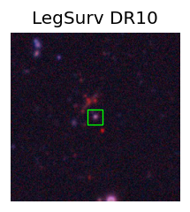
Milliquas v8 (2 arcsec):Found None (description), name = None, QSO probability: None %
TESS: Sectors [42 70]
SDSS (<15 kpc):Found SDSS phot-z: z=0.71; peak abs mag = -20.54
PS1: 0 sources in 3 arcsec
LegacySurvey: 1 sources in 3 arcsec Closest: d = 0.04 arcsec, 172.3 deg (east of north) photoz=0.97 (68% bounds 0.8, 1.13), type=DEV peak abs mag (ext. corrected) = -21.35 (68% bounds -20.84, -21.77)
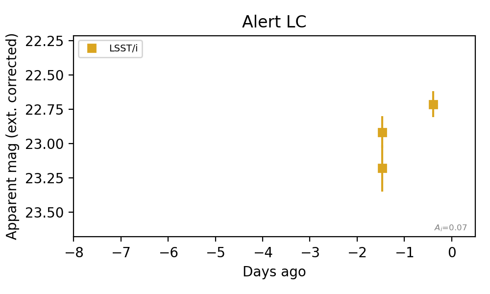
Rise Rate:
i: 0.27 mag/day
Fade Rate:
4. [LSST] 171141201660477560 (FBOT?) [Back to Top] [Fritz Alert] [Fritz Source] [Lasair]RA, Dec: 359.87165, -3.78927 23h59m29.19s, -3d-47m-21.38sGalactic (l, b): 92.6818, -63.56745 WARNING: -3.43 deg from ecliptic plane ext(g-r) = 0.04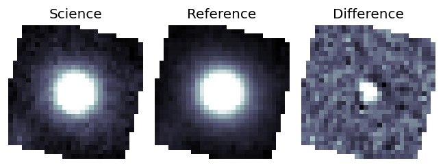
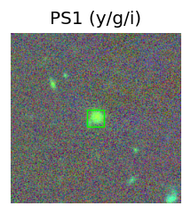
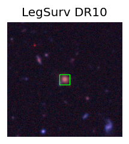
TESS: Sectors [42 70]
NED host (10 arcsec):Found WISEA J235929.19-034721.3 (G, 0.1″); NED spec-z: z=0.3669 [zflag SLS]; peak abs mag = -19.54
PS1: 0 sources in 3 arcsec
LegacySurvey: 1 sources in 3 arcsec Closest: d = 0.11 arcsec, 223.4 deg (east of north) photoz=0.32 (68% bounds 0.3, 0.34), type=SER peak abs mag (ext. corrected) = -19.21 (68% bounds -19.07, -19.33)
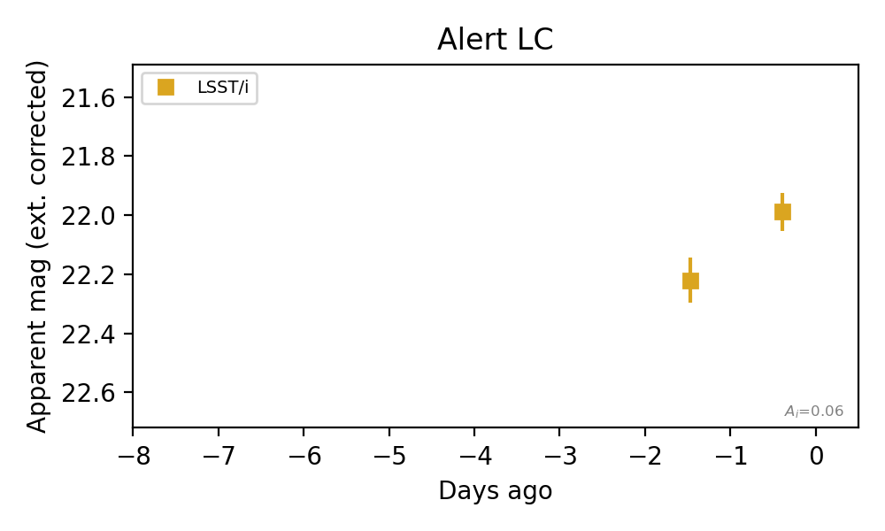
Rise Rate:
i: 0.21 mag/day
Fade Rate:
5. [LSST] 171141201663623217 (FBOT?) [Back to Top] [Fritz Alert] [Fritz Source] [Lasair]RA, Dec: 359.98195, -4.19516 23h59m55.67s, -4d-11m-42.57sGalactic (l, b): 92.49009, -63.97937 WARNING: -3.84 deg from ecliptic plane ext(g-r) = 0.041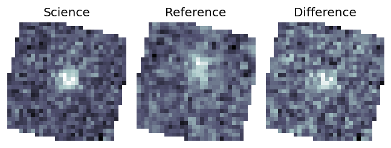
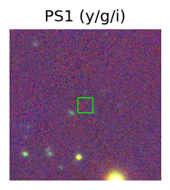
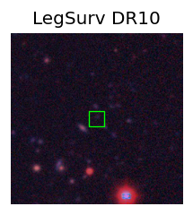
TESS: Sectors [42 70]
SDSS (<15 kpc):Found SDSS phot-z: z=0.39; peak abs mag = -22.77
PS1: 0 sources in 3 arcsec
LegacySurvey: 1 sources in 3 arcsec Closest: d = 0.66 arcsec, 333.4 deg (east of north) photoz=0.86 (68% bounds 0.58, 1.19), type=REX peak abs mag (ext. corrected) = -24.84 (68% bounds -23.82, -25.72)
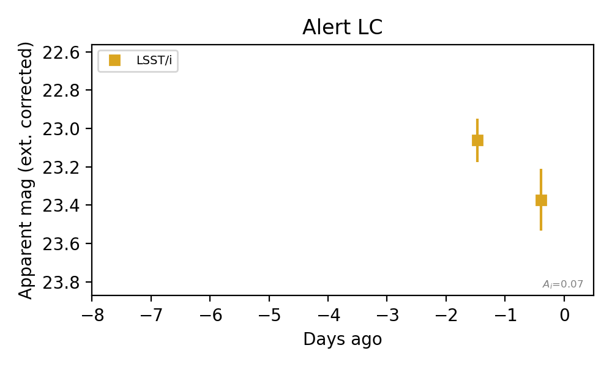
Extinction-corrected gr color:
From alerts: 2.18 +/- 99 mag
Rise Rate:
r: 46.2 mag/day
Fade Rate:
6. [LSST] 171141201776345140 (Afterglow?) [Back to Top] [Fritz Alert] [Fritz Source] [Lasair]RA, Dec: 0.33516, -3.98227 0h 1m20.44s, -3d-58m-56.18sGalactic (l, b): 93.42474, -63.94585 WARNING: -3.79 deg from ecliptic plane ext(g-r) = 0.041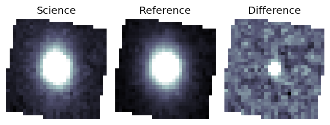
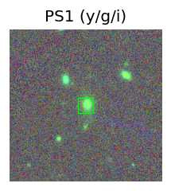
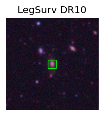
TESS: Sectors [42 70]
SDSS (<15 kpc):Found SDSS phot-z: z=0.22; peak abs mag = -18.14
PS1: 0 sources in 3 arcsec
LegacySurvey: 1 sources in 3 arcsec Closest: d = 0.03 arcsec, 352.9 deg (east of north) photoz=0.23 (68% bounds 0.19, 0.28), type=SER peak abs mag (ext. corrected) = -18.31 (68% bounds -17.86, -18.78)
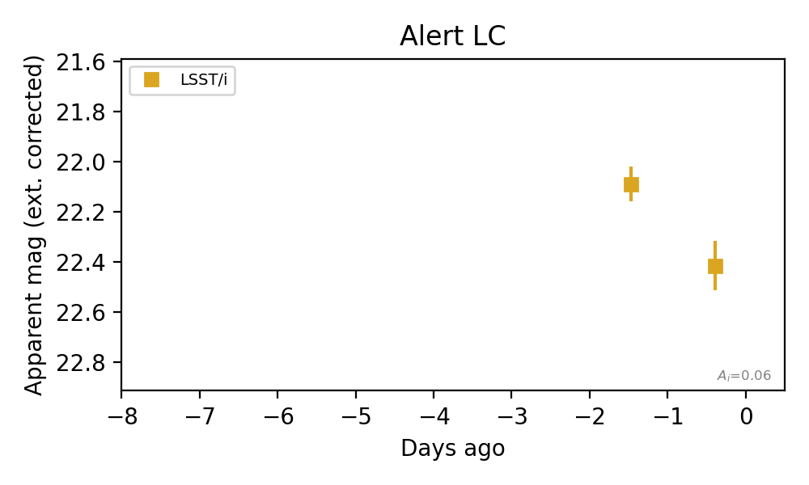
Rise Rate:
Fade Rate:
i: 0.3 mag/day
7. [LSST] 171141202968051750 (FBOT?) [Back to Top] [Fritz Alert] [Fritz Source] [Lasair]RA, Dec: 358.83328, -1.20966 23h55m19.99s, -1d-12m-34.78sGalactic (l, b): 93.15537, -60.79587 WARNING: -0.65 deg from ecliptic plane ext(g-r) = 0.026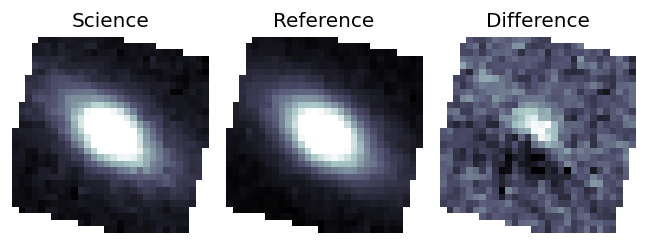
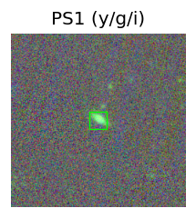
TESS: Sectors 42
SDSS (<15 kpc):Found SDSS phot-z: z=0.23; peak abs mag = -23.03
PS1: 0 sources in 3 arcsec
LegacySurvey: 1 sources in 3 arcsec Closest: d = 0.03 arcsec, 294.3 deg (east of north) photoz=0.19 (68% bounds 0.18, 0.21), type=SER peak abs mag (ext. corrected) = -22.52 (68% bounds -22.36, -22.79)
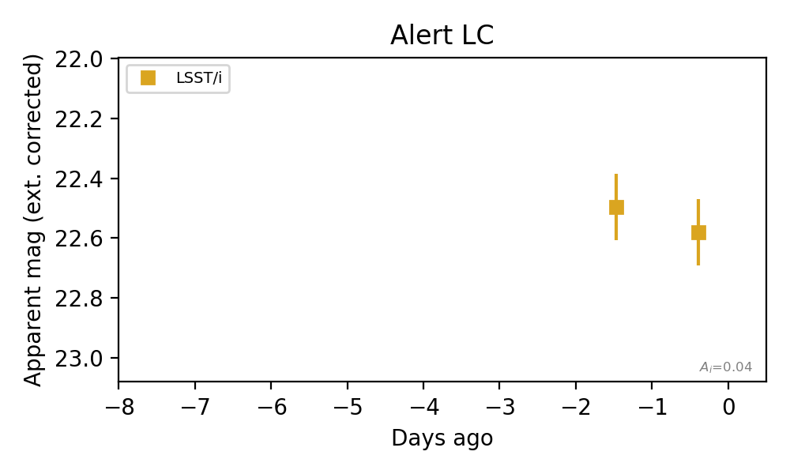
Extinction-corrected gr color:
From alerts: 1.73 +/- 99 mag
Rise Rate:
r: 0.47 mag/day
Fade Rate:
8. [LSST] 171141203017859107 (FBOT?) [Back to Top] [Fritz Alert] [Fritz Source] [Lasair]RA, Dec: 359.54642, -2.2482 23h58m11.14s, -2d-14m-53.51sGalactic (l, b): 93.53937, -62.04203 WARNING: -1.88 deg from ecliptic plane ext(g-r) = 0.039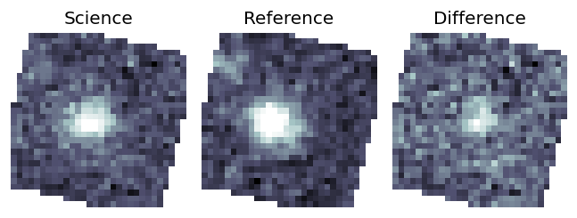
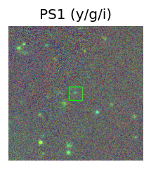
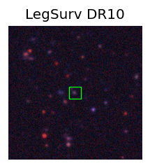
TESS: Sectors [42 70]
SDSS (<15 kpc):Found SDSS phot-z: z=0.71; peak abs mag = -24.65
PS1: 0 sources in 3 arcsec
LegacySurvey: 1 sources in 3 arcsec Closest: d = 0.58 arcsec, 99.9 deg (east of north) photoz=0.47 (68% bounds 0.39, 0.54), type=DEV peak abs mag (ext. corrected) = -23.59 (68% bounds -23.12, -23.95)
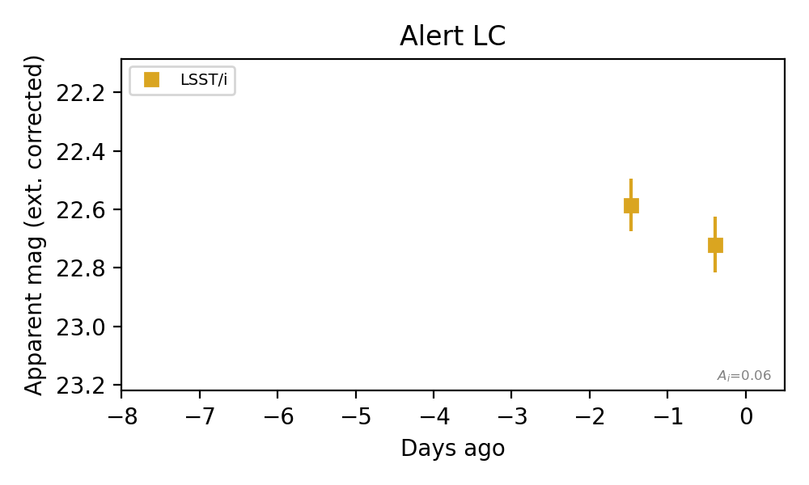
Rise Rate:
i: 0.4 mag/day
Fade Rate:
i: 0.01 mag/day
9. [LSST] 171141203019956326 (FBOT?) [Back to Top] [Fritz Alert] [Fritz Source] [Lasair]RA, Dec: 359.94422, -2.48727 23h59m46.61s, -2d-29m-14.18sGalactic (l, b): 94.08581, -62.42977 WARNING: -2.26 deg from ecliptic plane ext(g-r) = 0.042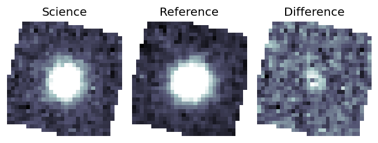
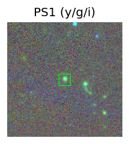
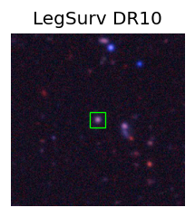
TESS: Sectors [42 70]
SDSS (<15 kpc):Found SDSS phot-z: z=0.35; peak abs mag = -22.18
PS1: 0 sources in 3 arcsec
LegacySurvey: 1 sources in 3 arcsec Closest: d = 0.11 arcsec, 169.9 deg (east of north) photoz=0.26 (68% bounds 0.21, 0.33), type=REX peak abs mag (ext. corrected) = -21.41 (68% bounds -20.96, -22.03)
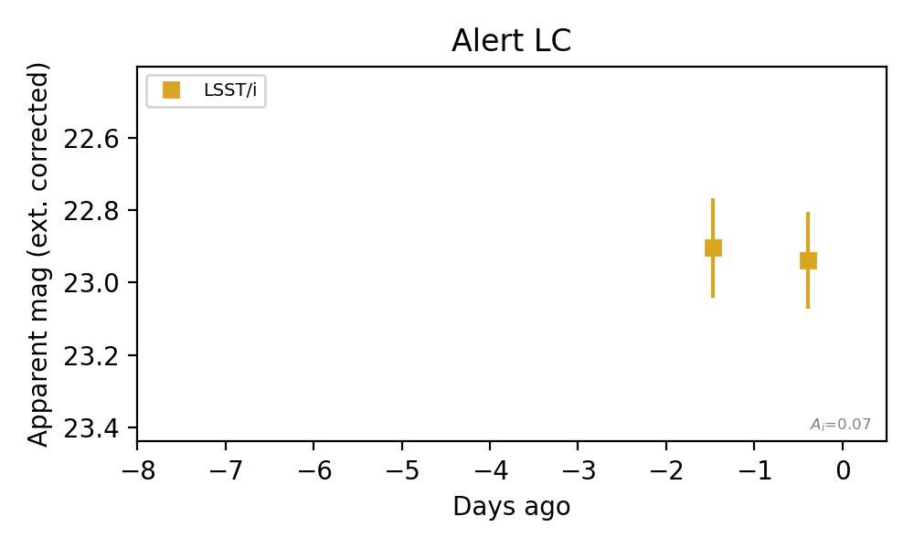
Extinction-corrected gr color:
From alerts: -1.61 +/- 99 mag
Rise Rate:
g: 0.38 mag/day
Fade Rate:
10. [LSST] 171141203019956350 (Afterglow?) [Back to Top] [Fritz Alert] [Fritz Source] [Lasair]RA, Dec: 359.96505, -2.5117 23h59m51.61s, -2d-30m-42.12sGalactic (l, b): 94.10373, -62.46077 WARNING: -2.29 deg from ecliptic plane ext(g-r) = 0.042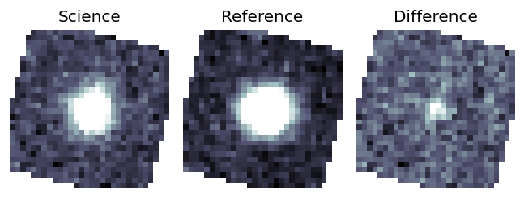
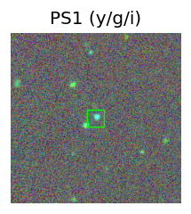
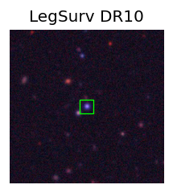
Milliquas v8 (2 arcsec):Found None (description), name = None, QSO probability: None %
TESS: Sectors [42 70]
PS1: 0 sources in 3 arcsec
LegacySurvey: 1 sources in 3 arcsec Closest: d = 0.13 arcsec, 238.7 deg (east of north) photoz=0.97 (68% bounds 0.83, 1.08), type=PSF peak abs mag (ext. corrected) = -21.39 (68% bounds -20.95, -21.65)
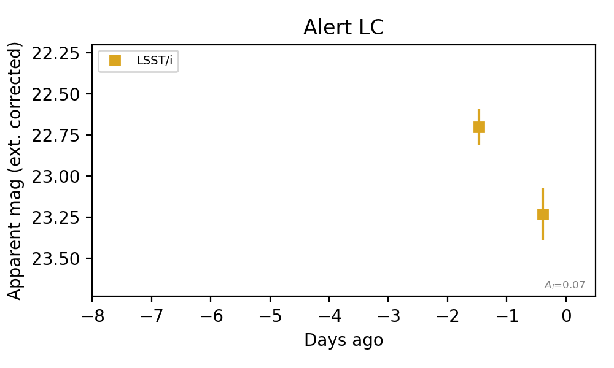
Rise Rate:
Fade Rate:
i: 0.49 mag/day
11. [LSST] 171141203021529141 (Afterglow?) [Back to Top] [Fritz Alert] [Fritz Source] [Lasair]RA, Dec: 0.52697, -1.75412 0h 2m6.47s, -1d-45m-14.82sGalactic (l, b): 95.87779, -62.00659 WARNING: -1.82 deg from ecliptic plane ext(g-r) = 0.043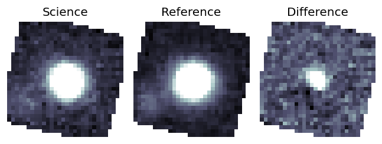
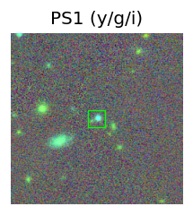
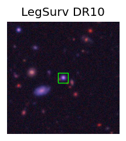
Milliquas v8 (2 arcsec):Found None (description), name = None, QSO probability: None %
NED QSO match (10 arcsec): WISEA J000206.45-014515.5 (QSO, 0.7″, z=0.7901)
TESS: Sectors [42 70]
SDSS (<15 kpc):Found SDSS phot-z: z=0.57; peak abs mag = -22.05
PS1: 0 sources in 3 arcsec
LegacySurvey: 1 sources in 3 arcsec Closest: d = 0.11 arcsec, 233.5 deg (east of north) photoz=0.39 (68% bounds 0.34, 0.43), type=PSF peak abs mag (ext. corrected) = -21.12 (68% bounds -20.77, -21.36)
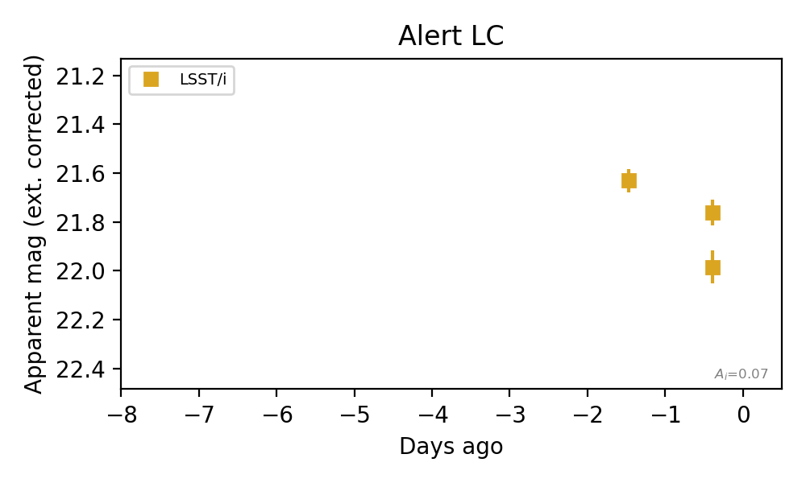
Rise Rate:
Fade Rate:
i: 0.2 mag/day
12. [LSST] 171141211841626293 (Afterglow?) [Back to Top] [Fritz Alert] [Fritz Source] [Lasair]RA, Dec: 10.15728, -42.28774 0h40m37.75s, -42d-17m-15.86sGalactic (l, b): 310.51775, -74.68093 ext(g-r) = 0.013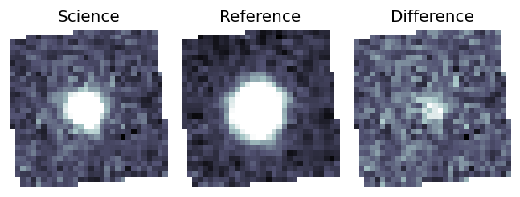

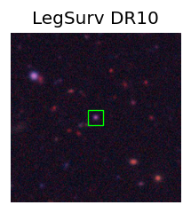
TESS: Sectors [ 69 96 103 104 105 106]
PS1: 0 sources in 3 arcsec
LegacySurvey: 1 sources in 3 arcsec Closest: d = 0.12 arcsec, 123.5 deg (east of north) photoz=0.96 (68% bounds 0.87, 1.16), type=PSF peak abs mag (ext. corrected) = -21.29 (68% bounds -21.02, -21.78)
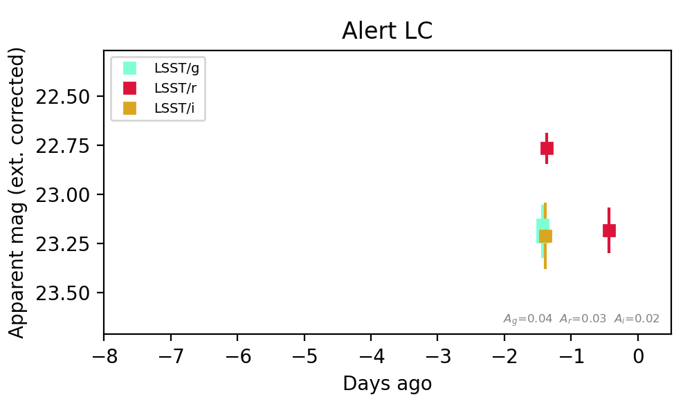
Extinction-corrected gr color:
From alerts: 0.42 +/- 0.11 mag
Extinction-corrected gi color:
From alerts: -0.03 +/- 0.19 mag
Extinction-corrected ri color:
From alerts: -0.45 +/- 0.19 mag
Consistent with synchrotron, g-r>0!
Rise Rate:
Fade Rate:
r: 0.45 mag/day
13. [LSST] 171141216047988836 (Afterglow?) [Back to Top] [Fritz Alert] [Fritz Source] [Lasair]RA, Dec: 36.8366, -5.32585 2h27m20.78s, -5d-19m-33.07sGalactic (l, b): 173.54273, -58.43018 ext(g-r) = 0.029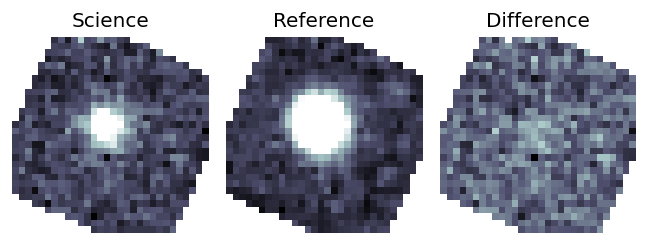
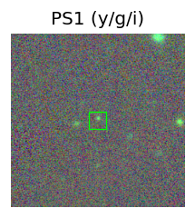
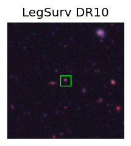
TESS: Sectors [ 4 31 108]
NED host (10 arcsec):Found SDSS J022720.80-051932.8 (G, 0.3″); NED spec-z: z=0.4916 [zflag SLS]; peak abs mag = -19.53
PS1: 0 sources in 3 arcsec
LegacySurvey: 1 sources in 3 arcsec Closest: d = 0.31 arcsec, 37.1 deg (east of north) photoz=0.52 (68% bounds 0.45, 0.61), type=DEV peak abs mag (ext. corrected) = -19.66 (68% bounds -19.28, -20.07)
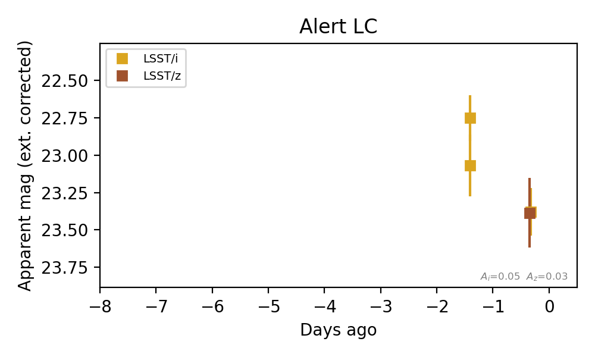
Extinction-corrected iz color:
From alerts: -0.01 +/- 0.28 mag
Consistent with synchrotron, g-r>0!
Rise Rate:
Fade Rate:
i: 0.47 mag/day
14. [LSST] 171141236771520778 (FBOT?) [Back to Top] [Fritz Alert] [Fritz Source] [Lasair]RA, Dec: 37.34359, -4.26253 2h29m22.46s, -4d-15m-45.10sGalactic (l, b): 172.85982, -57.31035 ext(g-r) = 0.031Coincident trigger: Fermi/GBM GRB261029100 (r=9.4 deg, sep 14.0 deg = 1.49 r; 1.11 d before first detection)Trigger time(s) marked on the light curve; error circles in the localization panel.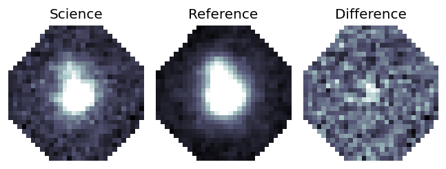
Milliquas v8 (2 arcsec):Found None (description), name = None, QSO probability: None %
NED QSO match (10 arcsec): WISEA J022922.45-041544.8 (QSO, 0.3″, z=0.7121)
TESS: Sectors -1
DESI (10 arcsec):Found DESI spec-z: z=0.71; peak abs mag = -20.66
PS1: 0 sources in 3 arcsec
LegacySurvey: 1 sources in 3 arcsec Closest: d = 0.05 arcsec, 185.6 deg (east of north) photoz=0.69 (68% bounds 0.6, 0.77), type=DEV peak abs mag (ext. corrected) = -20.57 (68% bounds -20.22, -20.87)
Rise Rate:
i: 0.54 mag/day
Fade Rate:
15. [LSST] 171141237262778515 (Afterglow?) [Back to Top] [Fritz Alert] [Fritz Source] [Lasair]RA, Dec: 34.21494, -6.19439 2h16m51.59s, -6d-11m-39.81sGalactic (l, b): 170.91496, -60.8377 ext(g-r) = 0.027
TESS: Sectors [ 4 31 97 108]
SDSS (<15 kpc):Found SDSS phot-z: z=0.37; peak abs mag = -18.72
PS1: 0 sources in 3 arcsec
LegacySurvey: 1 sources in 3 arcsec Closest: d = 0.18 arcsec, 142.7 deg (east of north) photoz=0.42 (68% bounds 0.35, 0.5), type=REX peak abs mag (ext. corrected) = -19.01 (68% bounds -18.59, -19.48)
Rise Rate:
Fade Rate:
i: 0.55 mag/day
16. [LSST] 313756671869452384 (FBOT?) [Back to Top] [Fritz Alert] [Fritz Source] [Lasair]RA, Dec: 62.14225, -47.38765 4h 8m34.14s, -47d-23m-15.53sGalactic (l, b): 254.40727, -46.77274 ext(g-r) = 0.016
TESS: Sectors [ 3 5 30 97]
PS1: 0 sources in 3 arcsec
LegacySurvey: 1 sources in 3 arcsec Closest: d = 0.69 arcsec, 83.1 deg (east of north) photoz=0.94 (68% bounds 0.25, 1.31), type=PSF peak abs mag (ext. corrected) = -21.28 (68% bounds -17.9, -22.18)
Extinction-corrected gr color:
From alerts: -0.01 +/- 99 mag
Extinction-corrected gi color:
From alerts: -0.3 +/- 0.2 mag
Extinction-corrected ri color:
From alerts: 0.78 +/- 0.31 mag
Extinction-corrected iz color:
From alerts: -0.18 +/- 0.33 mag
Consistent with synchrotron, g-r>0!
Rise Rate:
g: 0.01 mag/day
r: 0.01 mag/day
i: 0.63 mag/day
z: 0.0 mag/day
Fade Rate:
g: 0.01 mag/day
i: 0.19 mag/day
17. [LSST] 313972150659186818 (Afterglow?) [Back to Top] [Fritz Alert] [Fritz Source] [Lasair]RA, Dec: 9.75908, -42.75675 0h39m2.18s, -42d-45m-24.32sGalactic (l, b): 311.30248, -74.16935 ext(g-r) = 0.01
TESS: Sectors [ 2 69 96 103 104 105 106]
PS1: 0 sources in 3 arcsec
LegacySurvey: 1 sources in 3 arcsec Closest: d = 0.06 arcsec, 77.3 deg (east of north) photoz=0.7 (68% bounds 0.62, 0.74), type=SER peak abs mag (ext. corrected) = -21.1 (68% bounds -20.81, -21.24)
Extinction-corrected gr color:
From alerts: 0.15 +/- 0.07 mag
Extinction-corrected gi color:
From alerts: 0.44 +/- 0.05 mag
Extinction-corrected ri color:
From alerts: 0.29 +/- 0.08 mag
Consistent with synchrotron, g-r>0!
Rise Rate:
Fade Rate:
r: 0.8 mag/day